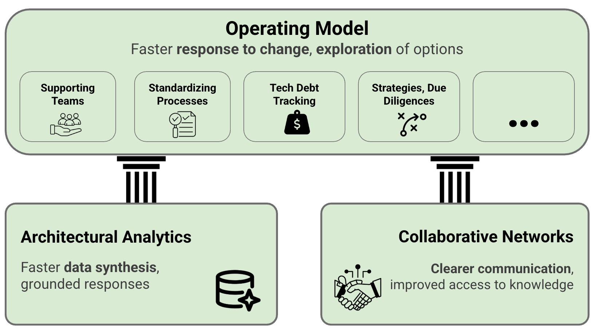

Bonus: Leveraging Generative AI within Grounded Architecture Framework

IN THIS SECTION, YOU WILL: Learn how you can responsibly leverage Generative AI as a powerful augmentation tool within to enhance efficiency, data-driven insights, and collaboration, provided you proactively manage its inherent risks and maintain critical human oversight.
KEY POINTS:
- Generative AI (GenAI) offers significant potential to augment your work as an IT architect by enhancing data analysis (Lightweight Analytics), improving knowledge sharing (Collaborative Networks), and streamlining tasks (Operating Model).
- Practical applications include accelerating analytics, generating ADRs and diagrams, augmenting requirements analysis, assisting solution design, improving code reviews, and drafting communications, ultimately freeing you up for higher-value strategic thinking.
- While GenAI promises increased efficiency, consistency, and better data-driven decisions, you must navigate challenges like accuracy issues (hallucinations), security risks, ethical considerations (bias), and the need for continuous human oversight and judgment.
- Responsible adoption requires a principled approach focusing on clear objectives, strong data governance, human-in-the-loop validation, grounding AI with RAG, and fostering an AI-literate culture within your organization.
- The future points towards real-time, augmented EA, agentic AI, and DTOs, further emphasizing the need for adaptability and evolving your role towards governing AI and focusing on strategic, collaborative, and ethical considerations.
Before wrapping up this section on the Grounded Architecture Framework, I’d like to dive into the intersection of Generative AI (GenAI) and IT Architecture. Let’s unpack this through the lens of the Grounded Architecture Framework.
Think of this as a practical guide rooted in my first real-world experiences with GenAI in architectural work. As someone actively engaged in architectural practices within complex environments, I’ve played around with GenAI tools to see how they can enhance our workflows. What I want to share are some initial insights, lessons I’ve learned, and practical tips for fellow architects eager to explore this area.
Generative AI has come a long way. It’s transitioned from being a cool experiment to a powerful tool that creates text, code, designs, and so much more. In the field of architecture, where we often juggle fast-changing demands and tools that can feel sluggish and fragmented, GenAI holds real promise. It can help improve our efficiency, automate those tedious repetitive tasks, and speed up data-driven decision-making.
However, I’ve also seen how quickly this promise can create new challenges. If not approached thoughtfully, we might face increased complexity, unclear ownership, or even ethical dilemmas. That’s where the Grounded Architecture approach shines—it offers us a clear framework to use GenAI responsibly, adaptively, and strategically.
This section is here to help IT and Enterprise Architects get started with GenAI in a thoughtful and practical way. Here’s what I’ll be covering:
- What GenAI can realistically achieve today
- How to weave it into architectural practices
- Valuable use cases I’ve discovered
- The benefits, as well as common pitfalls
- Best practices for using it responsibly
- Potential future developments on the horizon
Ultimately, I want you to see GenAI as a strategic asset rather than just a fleeting trend. When used wisely, it can enhance our architectural thinking and decision-making—not replace it.
And as a bonus, there’s an appendix with a set of GenAI prompts that I’ve tested for various tasks.
(Just to keep it real, the first draft of this section was generated with a bit of help from the Gemini Deep Research chatbot, refined using ChatGPT, polished with Grammarly, and shaped to reflect my own experiences.)
What Generative AI Can Do for Today’s Architect
Generative AI (GenAI) is a type of artificial intelligence that’s trained on extensive datasets to create new and original content—like text, code, images, and designs. Unlike traditional AI that mainly focuses on analyzing and predicting data, GenAI leans more towards creation and enhancement.
The way users engage with GenAI is through natural language prompts, which makes it fairly accessible and adaptable for IT and Enterprise Architects facing complex challenges.
In my experience with GenAI, I’ve found it to be a useful tool in architectural practice. It really helps in various aspects, such as creating, analyzing, automating, communicating, and making decisions.
Here’s a breakdown of how GenAI can support architects today:
Creating and Improving Content
GenAI can help accelerate the production of typical architectural documents. For example, it can assist in:
- Drafting reports, technical documentation, emails, or Architecture Decision Records (ADRs)
- Creating starter code, architecture diagrams, or design notes
- Quickly iterating on content or code, which can cut down on time spent in revisions
With tools like Large Language Models (LLMs) such as GPT, architects can work more efficiently and tackle their tasks with improved ease.
Analyzing Data and Spotting Patterns
Architects often juggle various fragmented data sources. Here, GenAI can help by:
- Synthesizing both structured data (like spreadsheets) and unstructured data (like PDFs and meeting notes)
- Identifying architectural anti-patterns, outdated components, and technical debt
- Converting visual models into structured data for clearer analysis
These functions provide a means for quicker evaluations of extensive systems, fostering better insight into architectural health.
Automating Repetitive Tasks
Many routine tasks can be streamlined through automation. This includes:
- Drafting documentation
- Conducting standard code reviews
- Extracting requirements from text documents
- Generating options for solutions or transition scenarios
By automating these tasks, architects can allocate more of their time to strategic and creative endeavors.
Enhancing Communication and Collaboration
With conversational AI on the rise, GenAI can become:
- An internal architecture assistant to answer questions regarding standards or system dependencies
- A tool for explaining technical concepts to non-technical stakeholders
- A medium for sharing insights across teams, even asynchronously
When used effectively, GenAI can facilitate clarity and collaboration within an organization.
Offering Suggestions and Recommendations
GenAI can assist architects during the ideation phase by:
- Proposing architectural patterns or alternatives
- Recommending technologies based on known constraints
- Outlining strategies for modernization or migration
It’s important to regard these suggestions as starting points; the architect is still the ultimate decision-maker.
The Role of Retrieval-Augmented Generation (RAG)
One valuable approach for deploying GenAI in an enterprise setting is Retrieval-Augmented Generation (RAG).
While standard GenAI models generate responses based on their training data, RAG enhances this process by searching for and retrieving relevant info from real-time, trusted company sources like:
- Internal documentation
- Architecture repositories
- Technical standards and compliance databases
By doing this, the AI can align its outputs with the most up-to-date and company-specific knowledge.
RAG helps minimize inaccuracies and increases the quality of responses, ensuring they are contextual and aligned with organizational realities. This is essential for making informed decisions and maintaining architectural integrity.
In summary, while GenAI has significant potential to enhance architectural practice at various levels, the focus should be on how we can use it effectively and responsibly rather than whether or not to adopt it.
Integrating GenAI with Grounded Architecture
There is significant potential for Generative AI (GenAI) to enhance architectural practices when viewed through the Grounded Architecture framework. The benefits are especially evident in key areas such as data analysis, knowledge sharing, and operational efficiency—all core elements of Grounded Architecture.

Figure 1: Potential applications of Generative AI within the Grounded Architecture Framework.
By incorporating GenAI capabilities into the three foundational pillars of Grounded Architecture—Lightweight Architectural Analytics, Collaborative Networks, and the Operating Model—we can achieve new levels of scalability, clarity, and speed. Below is a breakdown of opportunities within each pillar.
GenAI in Lightweight Architectural Analytics (Better Understanding the Current State)
-
Gathering and Processing Data
GenAI can automate the extraction and summarization of information from various sources—such as code repositories, cloud billing data, support tickets, and internal documentation. Retrieval-Augmented Generation (RAG) can help consolidate these into a unified and easily accessible context. -
Recognizing Patterns and Anomalies
Advanced models can assist in identifying recurring architectural patterns, spotting anomalies, uncovering security vulnerabilities, and flagging areas of technical debt—thus enhancing our analytical capabilities. -
Generating Reports and Dashboards
GenAI can support the automated creation of architectural reports and dashboards, making key insights more timely, consistent, and widely accessible.
GenAI in Collaborative Networks (Working Together More Effectively)
-
Managing and Sharing Knowledge
Static repositories like Architecture Decision Records (ADRs) and design documents can be transformed into dynamic, conversational knowledge bases, improving discoverability and everyday usefulness. -
Assisting with Communication
Drafting messages, presentations, and stakeholder updates becomes more efficient and consistent, helping architects effectively communicate technical content to diverse audiences—from developers to executives. -
Summarizing Meetings
GenAI can capture and summarize discussions, decisions, and action points, reducing the risk of information loss and enhancing follow-through across teams.
GenAI in the Operating Model (Accelerating How Architecture Gets Done)
-
Supporting Code and Documentation
AI-powered assistants can help architects and teams write, review, or refine code and supporting documentation, especially for repeatable tasks or boilerplate content. -
Generating Architectural Artifacts
Initial drafts of diagrams, roadmaps, risk registers, or architecture descriptions can be co-created with GenAI, saving time and establishing a clear starting point. -
Tracking and Prioritizing Technical Debt
Automating the detection, documentation, and prioritization of technical debt can lead to faster remediation and more informed architectural trade-offs. -
Accelerating Due Diligence
During mergers, acquisitions, or audits, GenAI can summarize large volumes of technical material, helping leaders quickly grasp risks and opportunities. -
Standardizing Governance and Practices
Drafting architecture standards, policies, or review checklists using AI can lead to greater consistency and reduce the effort required to onboard new teams or scale practices. -
Assisting in Strategy Development
By analyzing existing data and external signals, GenAI can assist with initial drafts of technology strategy, future scenarios, or architectural vision documents.
GenAI, when aligned with the Grounded Architecture framework, has the potential to transform architectural work—not by replacing architects, but by amplifying their capabilities. Whether automating analysis, enhancing communication, or accelerating strategy development, GenAI can support more informed, efficient, and adaptive architectural practices.
As with any powerful tool, intentional integration is crucial. When grounded in solid data, connected people, and well-designed processes, GenAI becomes a valuable strategic asset that helps architects achieve more, faster, and with greater clarity.
Practical Examples: GenAI in Action
I view Generative AI as a valuable tool for architects. By automating repetitive and time-consuming tasks, it allows architects to concentrate on high-impact responsibilities—such as evaluating architectural trade-offs, collaborating with teams, interpreting outcomes, and applying sound judgment. These responsibilities are fundamental to the Grounded Architecture approach, and GenAI can enhance these workflows, making them more efficient and scalable.

Use Case 1: Analyzing Dependencies and Technical Debt
- Scenario: Evaluating the dependencies among microservices and identifying outdated libraries or unnecessary couplings.
- GenAI Application: GenAI can analyze codebases, CI/CD data, and telemetry tools to uncover architectural problems. When combined with Retrieval-Augmented Generation (RAG), it can also examine internal documentation to highlight ownership, policy violations, or missing standards. Additionally, it may draft reports summarizing issues and offering recommendations.
- Grounded Architecture Link: This enhances Lightweight Architectural Analytics by increasing visibility into the current system health.
Use Case 2: Generating Architecture Decision Records (ADRs)
- Scenario: After a team selects a messaging technology, the rationale needs to be documented.
- GenAI Application: GenAI can summarize meeting notes and draft an ADR using templates, referencing relevant standards or prior decisions through RAG. Architects can then review, adjust, and finalize the document.
- Grounded Architecture Link: This supports an Operating Model (standardizing documentation) and Collaborative Networks (capturing and sharing decisions).
Use Case 3: Creating Architecture Diagrams from Descriptions
- Scenario: A team needs a quick system overview diagram for a strategy meeting.
- GenAI Application: AI diagramming tools can convert natural language descriptions into draft diagrams or generate visuals directly from code or configuration files. These drafts can then be refined for presentation purposes.
- Grounded Architecture Link: This aids collaboration and communication within Collaborative Networks and streamlines visuals within the Operating Model.
Use Case 4: Improving Requirements Analysis
- Scenario: Synthesizing user stories, emails, and transcripts into clear, actionable requirements.
- GenAI Application: NLP-based GenAI tools can extract, cluster, and organize raw input into coherent requirement lists, along with draft acceptance criteria and suggested test scenarios.
- Grounded Architecture Link: This supports early-phase design in the Operating Model, enhancing alignment between needs and solutions.
Use Case 5: Assisting with Solution Design and Evaluation
- Scenario: Designing a new recommendation engine while considering constraints like security and performance.
- GenAI Application: GenAI, supported by internal standards via RAG, can suggest patterns, generate outlines of options, and simulate trade-offs using historical benchmarks or current system data. Architects can use these insights to make informed final decisions.
- Grounded Architecture Link: This advances design and evaluation within the Operating Model, promoting data-driven decision-making.
Use Case 6: Enhancing Code Review Processes
- Scenario: Ensuring submitted code adheres to internal quality, security, and style guidelines.
- GenAI Application: Integrated into CI/CD, AI tools can flag issues, recommend fixes, summarize changes, and ensure consistency across reviews—supporting both automation and mentorship.
- Grounded Architecture Link: This reinforces quality and governance within the Operating Model and helps reduce technical debt.
These real-world examples demonstrate how GenAI can complement the architect’s role rather than replace it. By streamlining workflows, enhancing analysis, and accelerating documentation, GenAI enables architects to focus on what truly matters: strategic thinking, human collaboration, and informed decision-making—the pillars of Grounded Architecture.
Balancing Benefits, Risks, and Challenges
Based on my early experiences, I believe that Generative AI (GenAI) can significantly enhance architectural work, especially when applied thoughtfully within the Grounded Architecture framework. But it’s crucial to recognize that GenAI is not a panacea. It introduces new complexities and risks that must be managed carefully.
Key Benefits
The benefits of GenAI align closely with the principles of this framework:
- Efficiency corresponds with pragmatism.
- Faster data analysis supports data-informed decisions.
- Improved knowledge sharing strengthens collaborative networks.
- Better evaluation of options fosters adaptability.
More specifically, GenAI can:
-
Increase Efficiency and Productivity:
GenAI automates routine tasks such as drafting documentation (e.g., SOPs and ADRs), creating diagrams, reviewing code, and analyzing system data. This automation frees up time for strategic work that requires deeper human insight. -
Improve Consistency and Quality:
AI-generated outputs can adhere to predefined formats and templates, enhancing compliance with architectural standards. In code reviews, this consistency helps reduce human errors and subjective variations. -
Provide Faster, Data-Driven Decision Support:
GenAI rapidly processes and synthesizes diverse data, thereby supporting Lightweight Architectural Analytics and uncovering insights that would otherwise take much longer to discover. -
Enhance Collaboration and Knowledge Sharing:
By utilizing RAG-powered chatbots, document summarization, and conversational interfaces, GenAI improves access to institutional knowledge and facilitates clearer communication across teams and audiences. -
Foster Innovation:
By taking over repetitive tasks, GenAI allows architects to devote more time to exploring design options, evaluating trade-offs, and identifying innovative solutions. -
Make Architecture More Accessible:
GenAI can help translate technical content for non-technical stakeholders through visualizations, summaries, or simplified explanations, supporting the objective of Grounded Architecture to democratize architectural thinking.
Key Risks and Challenges
Despite these promising benefits, there are limitations and risks that require careful management. To ensure that GenAI is effective and sustainable, governance, oversight, and ethical awareness are essential.
-
Accuracy and Reliability (AI “Hallucinations”):
GenAI can produce confident but inaccurate or misleading outputs. Each result must be validated by a human, and this review process may offset time savings in critical scenarios. -
Security and Data Privacy:
Sharing sensitive data with cloud-based GenAI services poses a risk of data leaks or unintended model training. Implementing careful access control, anonymization, and encryption is critical for safeguarding data. -
Bias and Ethical Concerns:
AI models can amplify existing biases present in training data. Without intervention, this could lead to unintended consequences in architectural recommendations, hiring practices, or strategic decisions. -
Intellectual Property and Copyright Uncertainty:
The legal landscape surrounding AI-generated content is still evolving. AI outputs might inadvertently include material derived from copyrighted training data, raising questions about ownership and reuse. -
Need for Human Oversight:
GenAI serves as a tool, not a replacement for human judgment. Architects must maintain control, applying their expertise, context awareness, and strategic thinking. Over-reliance on GenAI may lead to poor decisions. -
Cost and Resource Demands:
Implementing GenAI solutions—especially enterprise-grade or private models—requires significant computing power, integration efforts, and financial investment, both upfront and ongoing. -
Performance and Latency:
Complex prompts and models may respond slowly, particularly in real-time scenarios, impacting the user experience or delaying interactions where speed is critical. -
Integration Complexity:
Seamlessly incorporating GenAI into existing workflows and architectural tools involves a non-trivial technical setup, including managing APIs, data pipelines, prompt engineering, RAG configurations, and governance layers. -
Model Limitations (Context Window and Memory):
GenAI models have constraints on how much context they can handle simultaneously. In complex architectural tasks involving large systems or lengthy documents, these limitations can affect the output’s usefulness.
GenAI presents a compelling opportunity to enhance architectural effectiveness, but it must be introduced with awareness of its limitations. Like any powerful tool, it has trade-offs. When implemented with responsible governance and integrated with human oversight, GenAI can serve as a valuable partner to architects, helping them navigate complexity, accelerate delivery, and foster continuous learning.
Making GenAI Work Within Grounded Architecture
As organizations increasingly incorporate Generative AI (GenAI) into their operations, it’s essential to approach this transformative technology with strategic intent, ethical awareness, and structured execution. GenAI opens the door to new levels of efficiency, innovation, and insight, but it also introduces challenges around accuracy, governance, integration, and trust.

To responsibly integrate GenAI in a way that aligns with organizational goals and the principles of Grounded Architecture, I’ve found the following practices especially valuable:
-
Start with Clear Goals and Prioritized Use Cases Focus on high-value, low-risk applications aligned with strategic priorities. Use pilot projects to build confidence and refine your approach.
-
Build Strong Data Governance High-quality, secure, and well-managed data is foundational—especially for Retrieval-Augmented Generation (RAG). Prioritize lineage, privacy, encryption, and role-based access.
-
Embed Human Oversight (Human-in-the-Loop) Architects and decision-makers must remain central. Always include checkpoints for human validation, and define accountability clearly to avoid automation bias.
-
Adopt Ethical and Principle-Based Governance Guide your AI efforts with principles like fairness, reliability, privacy, inclusiveness, and accountability. Consider creating an internal AI review board or Center of Excellence.
-
Leverage Grounding with RAG for Contextual Accuracy To minimize hallucinations and increase business relevance, connect GenAI systems to internal, curated knowledge. Make RAG a core part of your enterprise AI design.
-
Make Deliberate Build-vs-Buy Choices Evaluate whether to use off-the-shelf tools with built-in AI features, consume public APIs, or build custom AI stacks. Factor in complexity, cost, and long-term adaptability.
-
Design Secure, Modular AI Architectures Apply Security by Design principles. Limit permissions, use identity-based access, and create modular systems that are easier to scale, monitor, and govern.
-
Test, Monitor, and Continuously Improve Treat GenAI like a living system. Monitor for performance drift, accuracy, cost (AI FinOps), and ethical risks. Create feedback loops and evolve the system iteratively.
-
Promote AI Literacy and Responsible Use Educate users on how GenAI works, its strengths and limitations, and how to engage critically with its output. Foster a culture that values curiosity, caution, and accountability.
In conclusion, Grounded Architecture provides a strong foundation for GenAI adoption. Organizations that are data-driven, collaborative, and pragmatic are uniquely positioned to harness the potential of GenAI—without compromising trust, alignment, or architectural integrity.
Success depends not just on tools, but on clear goals, strong governance, human judgment, and a culture of continuous learning and ethical responsibility.
The Evolving Landscape
As Generative AI (GenAI) and other AI technologies continue to mature, we are entering a phase of accelerated architectural evolution. These advancements promise faster feedback loops, real-time adaptability, and smarter systems—all of which align with and enhance the principles of Grounded Architecture.

These trends suggest a future where Enterprise Architecture (EA) becomes not just reactive but also proactive, adaptive, and continuously informed by AI systems.
Real-Time, Augmented Enterprise Architecture
EA may transition from static, periodic documentation to a “living architecture” that is continuously updated through AI monitoring and automated insights.
- AI agents could detect changes in infrastructure, systems, and usage patterns, instantly reflecting them in architectural models or knowledge graphs.
- Architects will become augmented decision-makers, utilizing GenAI as a “copilot” to explore trade-offs, simulate impacts, and prioritize initiatives in real time.
- The Lightweight Architectural Analytics repository could evolve into an “operating system for change”, enabling organizations to respond faster and smarter.
Rise of Agentic AI
More autonomous AI agents will begin to handle complex, multi-step tasks such as planning, tool usage, and workflow optimization.
- In EA, this could mean continuous governance checks, detection of architectural drift, and self-healing systems.
- While this brings the vision of self-optimizing organizations closer to reality, it introduces critical concerns regarding trust, safety, and control.
Digital Twins of Organizations (DTOs)
DTOs create real-time, data-rich replicas of an enterprise’s systems, processes, and operations.
- Paired with GenAI, DTOs enable predictive modeling, scenario testing, and real-time optimization.
- This aligns closely with Grounded Architecture’s goal of maintaining a current and comprehensive view of the enterprise.
- Leading organizations like BMW and UPS are already investing in this approach.
Increased Democratization and Collaboration
AI tools featuring natural language interfaces, such as chatbots and auto-generated visualizations, will expand access to architectural insights across the organization.
- Business users will be able to query EA repositories conversationally.
- AI-generated reports and explanations will help bridge the gap between technical and non-technical stakeholders.
- These tools will strengthen Collaborative Networks by fostering shared understanding and inclusive decision-making.
Composable and Modular AI Architectures
As innovation and experimentation accelerate, future AI systems will emphasize modularity and interoperability.
- Organizations will combine various components, such as LLMs, vector databases, RAG components, and AI agents.
- This aligns directly with Grounded Architecture’s emphasis on adaptability, enabling architectures to evolve without requiring complete rewrites.
The Evolving Role of the Architect
The architect’s role will further shift towards strategic enablement, with responsibilities such as:
- Governing AI adoption and ethics
- Curating enterprise data and model quality
- Ensuring alignment between AI outputs and business context
- Facilitating collaboration across domains
- Critically evaluating AI suggestions before implementation
New roles—such as Enterprise AI Architect—may emerge, focusing on designing and governing the intersection of architecture, AI, and business strategy.
Vertical AI Specialization
Industry-specific AI solutions (e.g., for healthcare, finance, and logistics) will continue to grow.
- Architects will need a strong understanding of domain-specific constraints and opportunities to guide responsible AI adoption.
- This reinforces the necessity for context-aware architecture practices, which Grounded Architecture directly supports.
The future of architecture will be faster, smarter, and more collaborative, significantly influenced by GenAI and emerging AI capabilities. Grounded Architecture provides a foundation that is well-suited for this transformation, anchored in adaptability, transparency, and strategic judgment.
As the landscape evolves, architects have the opportunity not just to adapt, but to lead—curating AI’s role responsibly while driving meaningful business outcomes through thoughtful design and governance.
Final Thoughts
As Generative AI (GenAI) evolves from a novel concept to a powerful enterprise tool, architects have a significant opportunity to transform their practice for greater speed, adaptability, and strategic impact.
Architectural work often faces challenges due to fragmented tools, manual processes, and an overreliance on meetings and subjective opinion. GenAI has the potential to:
- Automate repetitive tasks
- Accelerate data analysis and documentation
- Enhance collaboration and communication
- Facilitate faster, more informed decision-making
However, a careless approach to implementing GenAI can also introduce risks, including inaccurate outputs, ethical concerns, integration difficulties, and hidden costs.
Grounded in real use cases and empirical experimentation, this report outlines how GenAI can empower architects to:
- Operate at scale by minimizing time spent on low-value tasks
- Increase adaptability with tools that evolve alongside the organization
- Enhance decision-making through the synthesis and analysis of complex data
- Improve alignment by providing clear and timely architectural insights
- Foster continuous learning via automated exploration and structured feedback loops
GenAI integrates seamlessly with the three foundational pillars of the Grounded Architecture framework:
- Lightweight Architectural Analytics: Automate the gathering of insights, pattern detection, and reporting.
- Collaborative Networks: Facilitate knowledge sharing through AI-driven summaries, chatbots, and communication support.
- Operating Model: Aid in creating architectural artifacts, maintaining standards, tracking technical debt, and shaping strategic direction.
Generative AI is more than just a tool; it is a catalyst for architectural evolution. With the Grounded Architecture framework as a guide, architects can leverage AI’s potential to enhance, rather than replace, their expertise, leading their organizations into a new era of intelligent and adaptable enterprise design.
To Probe Further
Questions to Consider
- How can you specifically use GenAI to improve the analytics within your organization? Which data sources are most promising for providing context with RAG?
- In what ways could GenAI tools enhance knowledge sharing and communication among your teams and stakeholders? What might be the obstacles to adopting these tools?
- Which activities in your team’s current way of working (Operating Model)—like creating ADRs, tracking technical debt, or defining standards—could benefit most from GenAI assistance?
- Given the risks of AI making errors (“hallucinations”) or showing bias, what specific human review processes would you need for critical architectural outputs generated by AI?
- What are the biggest data privacy and security concerns for using GenAI with your company’s data, and how can you design solutions to effectively reduce these risks?
- How can you encourage a culture of responsible AI use and critical thinking about AI outputs among your fellow architects and development teams?
- Which specific GenAI use case (e.g., generating diagrams, analyzing requirements, reviewing code) should you try experimenting with first, and how would you measure its success?
- How does the Grounded Architecture principle of “Data-Driven Decisions” connect with the need for high-quality data to effectively train and ground GenAI models in your organization?
- Looking at future trends like Agentic AI and Digital Twins of Organizations (DTOs), how should you start preparing your skills and your organization’s architecture practice for these advancements?
- What ethical guidelines and governance principles are most important for your organization to establish before widely adopting GenAI within your architecture practice?
On Being Architect |
|||
| ← | → | ||